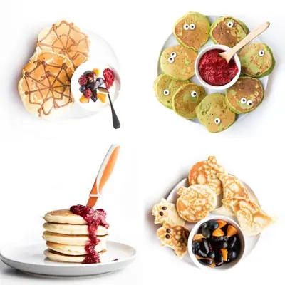

Halloween Pancakes

Ingredients
- 185g (1½ Cups) Plain (All-Purpose) Flour
- 2½ teaspoons Baking Powder
- 2 tablespoons Sugar (optional)
- 1 Egg
- 250ml (1 cup) Milk
- 1 tablespoon Cocoa Powder
- ½ teaspoon Coconut Oil
- 2 small Ripe Bananas
- 80g (2 cups) Spinach
- 1 Egg
- 125ml (½ cup) Milk
- 1 teaspoon Vanilla Extract
- 130g (1 cup) Buckwheat Flour
- 1 teaspoon Cinnamon
- 1 teaspoon Baking Powder
- 1 teaspoon Coconut Oil
- 12-24 Edible Eyes
- 185g (1½ cups) Plain (All-Purpose) Flour
- 2½ teaspoons Baking Powder
- 2 tablespoons Sugar (optional)
- 1 Egg
- 200ml (¾ cup + 1tbsp) Milk
- ½ teaspoon Coconut Oil
- 1 cup Frozen Raspberries
- 185g (1½ cups) Plain (all-purpose) Flour
- 2½ teaspoons Baking Powder
- 2 tablespoons Sugar (optional)
- 1 Egg
- 250 ml (1 cup) Milk
- ½ tsp Coconut Oil
Steps
- Gently whisk the flour and baking powder together in a large mixing bowl. Make a well in the centre of the flour mixture and break the egg into it. Pour in half the milk then whisk the ingredients together. Add the remaining milk and continue to whisk until combined.
- Transfer ¼ of the mixture to a seperate bowl. Add cocoa and whisk until combined. Pour this mixture into a squeeze bottle.
- Heat a medium non-stick frying pan over medium heat, and coat the pan with the coconut oil Use a pastry brush or wipe with a folded paper towel to ensure there is a thin, even coating of oil on the pan with no droplets of oil visible.
- Draw a web pattern with the cocoa mixture into the pan. When set, spoon the plain mixture over the top to completely cover. Cook until bubbles appear on surface. Flip and cook the other side until golden (usually around 1 - 1.5 mins). Repeat, brushing pan with oil between pancakes.
- Add one of the bananas, spinach, egg, milk and vanilla to a blender and blitz until smooth.
- Add the flour, baking powder and cinnamon to a mixing bowl and stir until combined. Mash the remaining banana and add it to the dry ingredients along with the blended mixture. Gently stir until combined.
- Heat a large non-stick frying pan, over medium heat, and coat the pan with the oil. Use a pastry brush or wipe with a folded paper towel to ensure that there is a thin, even coating of oil on the pan with no droplets of oil visible
- Place 2 tablespoons of batter into the pan to form one pancake. Cook until bubbles appear on the surface then flip and cook the other side until golden (usually around 1 – 1 1/2 minutes). If you have a big pan you can do several at once. Repeat with remaining batter.
- Push eyes randomly in the pancakes and serve with chia jam
- Gently whisk the flour and baking powder together in a large mixing bowl. Make a well in the centre of the flour mixture and break the egg into it. Pour in half the milk then whisk the ingredients together. Add the remaining milk and continue to whisk until combined.
- Heat a large non-stick frying pan, over medium heat, and coat the pan with the oil. Use a pastry brush or wipe with a folded paper towel to ensure that there is a thin, even coating of oil on the pan with no droplets of oil visible.
- Place a heaped tablespoon of batter into the pan. Cook until bubbles appear on the surface (see photo) then flip and cook the other side until golden (usually around 1 - 1 1/2 minutes). If you have a big pan you can do several at once. Repeat with the remaining batter.
- Heat frozen raspberries in a small pan until broken down and reduced into a textured sauce.
- Stack the pancakes and add a knife in the top. Add the raspberry sauce around the knife and allow it to drip down the stack of pancakes
- Grease the insides of the Halloween cookie cutters liberally with coconut oil (or use an oil spray).
- Gently whisk the flour and baking powder together in a large mixing bowl. Make a well in the centre of the flour mixture and break the egg into it. Pour in half the milk then whisk the ingredients together. Add the remaining milk and continue to whisk until combined.
- Heat a large non-stick frying pan, over medium heat, and coat the pan with the oil. Use a pastry brush or wipe with a folded paper towel to ensure that there is a thin, even coating of oil on the pan with no droplets of oil visible.
- Place greased Halloween cookie cutters on to the pan surface . Spoon batter into the cookie cutter and spread the batter to fill the shape.Allow pancake to cook, with mold in place, until bubble form all over the surface. Gently remove the cookie cutter using a set of tongs. Flip to cook the other side (usually around 1 - 1½ minutes). Repeat with the remaining batter.
Recipe by Healthy Little Foodies, from Healthy Little Foodies. Saved here for personal use; the original has the full notes, tips and photos. Open original